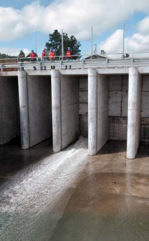

The Stand at Klamath Falls
Report Number Sixteen - New A Canal Headgates Open on Schedule
By: Jeff Head, April 2, 2003
[With Klamath Article regarding Opening]
For the second year in a row, the Federal Government turned the farmer's irrigation water on, on schedule in the Klamath Basin. This despite continuing environmentalist efforts to either vastly reduce it or keep it off and the continued listing of the sucker fish in the lake as endangered.
On the one hand, the farmer's trust in this administtration continues to build, on the other they continue to be justifiably very leery and skeptical because the same conditions of 2001 could be repeated at almost any time, and because the government continues to balk at the proper settlement, which is the privatization of the project accoring to the original terms of the Reclamation Act that produced it.
The following is the Klamath article regarding the opening of the headgates in 2003.
Klamath Herald News Article - Let there be water
Headgates open on schedule
published April 1, 2003
By DYLAN DARLING

Water flows through one of the six new headgates on the A Canal this morning. Contractors opened the headgates today, meeting a deadline set by the Bureau of Reclamation in order to allow irrigation to begin on schedule in the Klamath Project.
Water began pouring through a new set of headgates on the A Canal today, marking a milestone in a complex construction project and the beginning of an uncertain irrigation season.
Also entering service today is a high-tech fish screen to keep endangered suckers and other fish from being diverted into the series of canals that feeds the Klamath Reclamation Project.
The headgates were cracked open by a worker for Slayden Construction of Stayton, the general contractor for the project.
With the push of a button on a computer keyboard, the headgates opened on the day the Bureau set as a deadline for completion of the new headgates.
"They have been busy until the last minute, but it is up and ready to go this morning," said Jim Bryant, operations manager for the Bureau's Klamath Basin Area Office.
On hand to watch the opening of the headgates was a group of reporters, Bureau officials and contractors, who gathered to see the first flow of the summer. The old headgates, built in 1907 and demolished last October, had been the site of protests of the Bureau's cutting the supply of irrigation water in 2001.
The opening of the headgates comes as the Bureau is expected to announce within a few days how much water will be available for irrigation and protection of threatened and endangered fish.
In recent weeks, Slayden Construction has been testing the headgate system, including the fish screens and trash rack, while also teaming with the Bureau in training staff from the Klamath Irrigation District on how to operate them. Brushes will automatically cover the screens each day to keep them clear of debris.
Bryant said the contractors will continue to run the system until mid-summer, when it will let the irrigation district take over the controls.
"It's a very complex system and the district has made their people available for training while we have the experts here," Bryant said.
David Solem, manager of the Klamath Irrigation District, said that functionally the headgates are the same as the old ones, but there are a lot more things to learn.
"There's a lot more things going on here than before," he said.
The new headgates, with all of its computers, automated rakes and fish pumps, had a price tag of about $15 million dollars.
About 70 cubic feet of water per second squirted through the headgates today as the system will be first primed before more flow is slowly added in the coming weeks, said Dave Sabo, manager of the Bureau's Klamath Area Office.
"You want to gradually fill up the system," Sabo said. When full, the canal flows at about 1,000 cfs.
Although the headgates are ready and water is flowing, construction will continue for several months at the site. Work should be finished next October, with the last piece being a secondary bypass pipe that will lead screened fish to below the Link River Dam if needed.
Dan Keppen, executive director of the Klamath Water Users Association, said it was a tremendous feat for the contractors and the Bureau to complete such a major project in six months.
"Can you imagine if they didn't get that done in time and we didn't have water for two weeks?" he said. "I salute those guys."
The Bureau will host a tour of the headgates and fish screen Sunday at 2 p.m. To reserve a spot in the tour call (800) 742-9474, and then press 2 and 8.